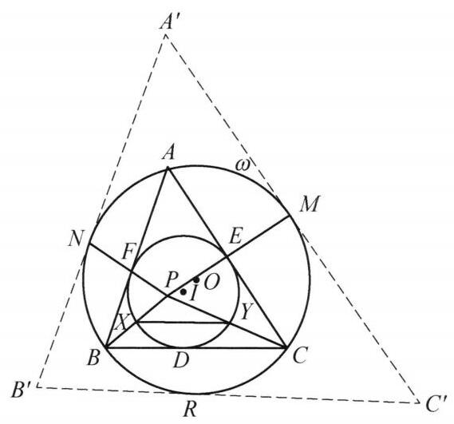

97 例 2：内切圆切点连线与位似平行证明
97.1 题目
设 \triangle {ABC} 的内切圆 I 与 {BC},{CA},{AB} 分别切于点 D, E, F, M, N 分别是 \triangle {ABC} 的外接圆 \omega 的弧 \overset{\text{ ⏜ }}{AC},\overset{\text{ ⏜ }}{AB} 的中点, {ME},{NF} 交于点 P,{PB},{PC} 与圆 I 交于点 X, Y . 证明: {XY}//{BC} .
97.2 参考解答
如图 7-1,设弧 \overset{\text{ ⏜ }}{BC} 的中点为 R ,过 M, N, R 做 \omega 的切线交成 \triangle {A}^{\prime }{B}^{\prime }{C}^{\prime } . 记 \omega 的圆心为 O ,则 {ON} \perp {A}^{\prime }{B}^{\prime } . 又由垂径定理知 {ON} \perp {AB} ,于是 {AB}//{A}^{\prime }{B}^{\prime } . 同理可得 {BC}//{B}^{\prime }{C}^{\prime },{CA}//{C}^{\prime }{A}^{\prime } . 所以,存在将点 A 变为 {A}^{\prime }, B 变为 {B}^{\prime }, C 变为 {C}^{\prime } 的位似变换. 此变换也将 F 变为 N, E 变为 M , 从而 P 为位似中心,故 P, B,{B}^{\prime } 共线, P , C,{C}^{\prime } 也共线,注意到该位似变换将圆 I 变为圆 \omega ,结合 X 在 {PB} 上, Y 在 {PC} 上,知 {XY}//{BC} . 原问题得证.

图 7-1
注:通过位似变换将切点与弧中点相互转换是一个常见手法.
97.3 解题思路与分析
这份证明之所以让人觉得“费解”甚至有些“神来之笔”，是因为教材采用了倒果为因的叙述方式，并且在最后几步混入了一句极具误导性的冗余推导。
如果我们顺着几何直觉做“逆向工程”，就能清晰地看穿命题人和证明者的真实思考路径：
97.3.1 一、 破题的真正起点：点 P 究竟是什么点？
在读题时，最有特征的条件是：E, F 是内切圆 I 的切点，M, N 是外接圆 \omega 的弧中点，且 P = ME \cap NF。为什么会把“内切圆切点”和“外接圆弧中点”连起来？
我们不妨直接观察这两个圆在点 E 和点 M 处的局部几何性质： 1. 切点的本质：E 是内切圆 \odot I 在边 AC 上的切点，因此半径 \overrightarrow{IE} \perp AC，且方向指向 AC 背离顶点 B 的一侧。 2. 弧中点的本质：M 是外接圆 \odot \omega 上弧 \overset{\frown}{AC} 的中点，由垂径定理知半径 \overrightarrow{OM} \perp AC，且方向同样指向 AC 背离顶点 B 的一侧。
这意味着：半径向量 \overrightarrow{IE} 与 \overrightarrow{OM} 平行且同向（\overrightarrow{IE} \uparrow\uparrow \overrightarrow{OM}）！同理，在 AB 边上也有 \overrightarrow{IF} \uparrow\uparrow \overrightarrow{ON}。
在位似变换（Homothety）的视角下，这是一个极其强烈的信号： > 两圆位似基本定理：平面上任意两个半径不等的圆 \odot I（半径 r）与 \odot \omega（半径 R），必定存在唯一的正位似变换（即位似比 k = \frac{R}{r} > 0 的外位似变换）将 \odot I 映射为 \odot \omega。在该变换下，\odot I 上的点 E 必然映射为 \odot \omega 上使得半径平行且同向（或切线平行且同侧）的唯一点 M。
看清这一点，整道题的窗户纸就捅破了： * 在将 \odot I 变为 \odot \omega 的正位似变换 \mathcal{H} 下，E 的像就是 M，F 的像就是 N。 * 既然 E \mapsto M 且 F \mapsto N，那么对应点连线 ME 与 NF 都必须经过位似中心。 * 因此，交点 P 根本不是什么神秘的偶然交点，它就是内切圆 \odot I 与外接圆 \odot \omega 的外位似中心（在三角形几何中记作特征点 X_{56}）！
97.3.2 二、 去掉“脚手架”后的最自然证明
一旦认出 P 是 \odot I 到 \odot \omega 的正位似中心，根本不需要构造证明中的 \triangle A'B'C'，两句话就能完成证明：
- 确定 P 的位置与射线的对应关系： 由欧拉定理知两圆心距 OI = \sqrt{R^2 - 2Rr} < R - r。由于 P 是外位似中心，有 \frac{PI}{PO} = \frac{r}{R}，即： PI = \frac{r}{R - r} OI < r 这说明点 P 严格位于内切圆 \odot I 的内部！因此，从 P 出发的射线 \overrightarrow{PB} 与 \odot I 有且仅有一个交点 X（位于线段 PB 上），与 \odot \omega 有且仅有一个交点 B。
- 直接利用圆的位似得出平行： 以 P 为中心、位似比 k = \frac{R}{r} > 0 的位似变换 \mathcal{H} 将 \odot I 变为 \odot \omega。对于过位似中心 P 的射线 \overrightarrow{PB} 和 \overrightarrow{PC}，它们在 \odot I 上的交点 X, Y 必然直接被映射为在 \odot \omega 上的同向交点 B, C，即： \mathcal{H}(X) = B, \quad \mathcal{H}(Y) = C \implies \frac{PB}{PX} = \frac{PC}{PY} = \frac{R}{r} 位似变换将线段映射为平行线段，故立得 XY \parallel BC。
97.3.3 三、 为什么书上的证明读起来“费解”？
对比上面的自然思路，回看教材的证明过程，你会发现造成阅读障碍的两个原因：
97.3.3.1 1. 把“脚手架”当成了开篇第一步（构造 \triangle A'B'C' 的真正目的）
在中学数学竞赛教材中，作者往往避免直接使用“利用平行同向半径判定两圆位似对应点”这一结论，而是希望把问题转化为学生更熟悉的两个三角形的位似。 * 为了给外接圆 \omega 套上一个与 \triangle ABC 地位对等的外切三角形，作者在弧中点 M, N, R 处作 \omega 的切线，围成 \triangle A'B'C'。 * 这样一来，\odot I 是 \triangle ABC 的内切圆（切点 D,E,F），而 \odot \omega 恰好是 \triangle A'B'C' 的内切圆（切点 R,M,N）。 * 由三边分别平行（AB \parallel A'B' 等）推出 \triangle ABC 与 \triangle A'B'C' 位似，就能顺理成章地把“内切圆 \odot I \mapsto 内切圆 \odot \omega”以及“切点 (E,F) \mapsto 切点 (M,N)”打包证明出来。
也就是说，\triangle A'B'C' 只是为了规避直接讲“两圆位似”而搭建的脚手架。教材在第一句话就凭空抛出“设弧 BC 中点为 R，作切线交成 \triangle A'B'C'”，隐去了从 \overrightarrow{IE} \parallel \overrightarrow{OM} 想到位似的思维动机，自然让人觉得突兀。
97.3.3.2 2. 极具迷惑性的冗余步骤：“故 P, B, B' 共线，P, C, C' 也共线”
这是整段证明中最容易把读者绕晕的地方。请看原文的逻辑链条： > “从而 P 为位似中心，故 P, B, B' 共线，P, C, C' 也共线，注意到该位似变换将圆 I 变为圆 \omega，结合 X 在 PB 上，Y 在 PC 上，知 XY \parallel BC。”
很多读者读到这里会卡壳：为什么要强调 P, B, B' 共线？后面证 XY \parallel BC 用到 B' 了吗？ 答案是：完全没用到！这句话在这里是纯粹的冗余（甚至是干扰项）。
因为在同一个以 P 为中心的位似变换 \mathcal{H} 下，射线 PB 上其实发生了两次接力映射： X \ (\odot I \text{ 上的点}) \xrightarrow{\ \mathcal{H}\ } B \ (\odot \omega \text{ 上的点 / } \triangle ABC \text{ 的顶点}) \xrightarrow{\ \mathcal{H}\ } B' \ (\triangle A'B'C' \text{ 的顶点}) * 要证明 XY \parallel BC，我们只需要用到第一段映射 (X, Y) \xrightarrow{\mathcal{H}} (B, C)（即把 B, C 视为大圆 \omega 上的点）。 * 只要 P 是位似中心，过点 P 的任意一条直线都是位似不动直线，因此连接 PB 本身就是一条位似射线，根本不需要借助“B 的像是 B'，所以 PB 是位似线”来证明！ * 作者在写下“P 为位似中心”后，顺手按照 \triangle ABC \mapsto \triangle A'B'C' 的惯性写出了“P, B, B' 共线”，紧接着下一句却偷偷把视角从“三角形顶点映射（B \mapsto B'）”切换回了“两圆交点映射（X \mapsto B）”，没有点破 B 在这里身兼两职（既是第一段映射的像，又是第二段映射的原像），这才导致逻辑衔接显得极其跳跃。
97.4 分步证明
97.4.1 步骤 0：已知条件与几何构型
设锐角 \triangle ABC 的内切圆 I 与三边 BC, CA, AB 分别切于点 D, E, F；其外接圆记为 \omega。 取劣弧 AC, AB 的中点分别为 M, N。 连结 ME, NF 并延长相交于点 P。 从 P 引割线 PB, PC 分别与内切圆 I 交于点 X, Y。 求证：XY \parallel BC。
97.4.2 步骤 1：引出弧中点 R 作外切三角形
设外接圆 \omega 上劣弧 BC 的中点为 R。 分别过点 M, N, R 作外接圆 \omega 的三条切线，两两相交依次构成 \triangle A'B'C'： 切点为 N \in A'B', R \in B'C', M \in C'A'。 显然，外接圆 \omega 恰好为大三角形 \triangle A'B'C' 的内切圆。
97.4.3 步骤 2：垂径定理导出三组对应边平行
记外接圆 \omega 的圆心为 O。 因为 A'B' 切圆 \omega 于点 N，所以半径 ON \perp A'B'。 又因 N 为弧 AB 的中点，由垂径定理知直径所在直线 ON \perp AB。 故 AB \parallel A'B'。 同理可得：BC \parallel B'C'，CA \parallel C'A'。 三角形的三对边均保持平行！
97.4.4 步骤 3：确立两三角形的外位似映射
由三边对应平行且同向，必存在正位似变换 \mathcal{H}，将 \triangle ABC 映射为 \triangle A'B'C'。 在该位似变换下： 1. \triangle ABC 的内切圆 I 必然映射为 \triangle A'B'C' 的内切圆（即外接圆 \omega）； 2. 边 AB 上的切点 F 必映射为边 A'B' 上的切点 N（F \mapsto N）； 3. 同理切点 E \mapsto M，切点 D \mapsto R。
97.4.5 步骤 4：交点 P 即为位似中心，三线共点
在位似变换下，任何一对对应点的连线必过位似中心。 由于 F \mapsto N 且 E \mapsto M，故连线 FN 与 EM 必交于位似中心。 而已知 ME \cap NF = P，因此 P 恰为位似中心！ 对应顶点连线必过位似中心，立得： P, A, A' 共线；P, B, B' 共线；P, C, C' 共线。
97.4.6 步骤 5：位似映射导出 XY // BC（原命题得证）
位似变换 \mathcal{H}（中心为 P）将圆 I 变换为圆 \omega： 由于点 X 在圆 I 上，且在射线 PB 上，而 B 为圆 \omega 上的对应点，因此 X 的位似对应点即为 B（X \mapsto B）。 同理，射线 PC 上的圆 I 点 Y 的位似对应点即为 C（Y \mapsto C）。 因此，线段 XY 在该位似变换下直接映射为线段 BC。 由位似变换保持直线方向平行的基本性质，直接得出： XY \parallel BC。 原命题完全得证！